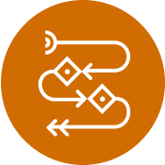
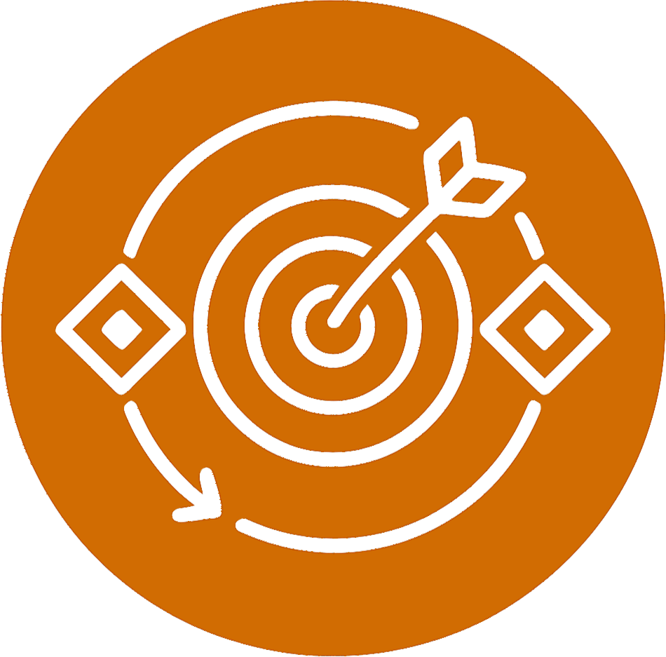
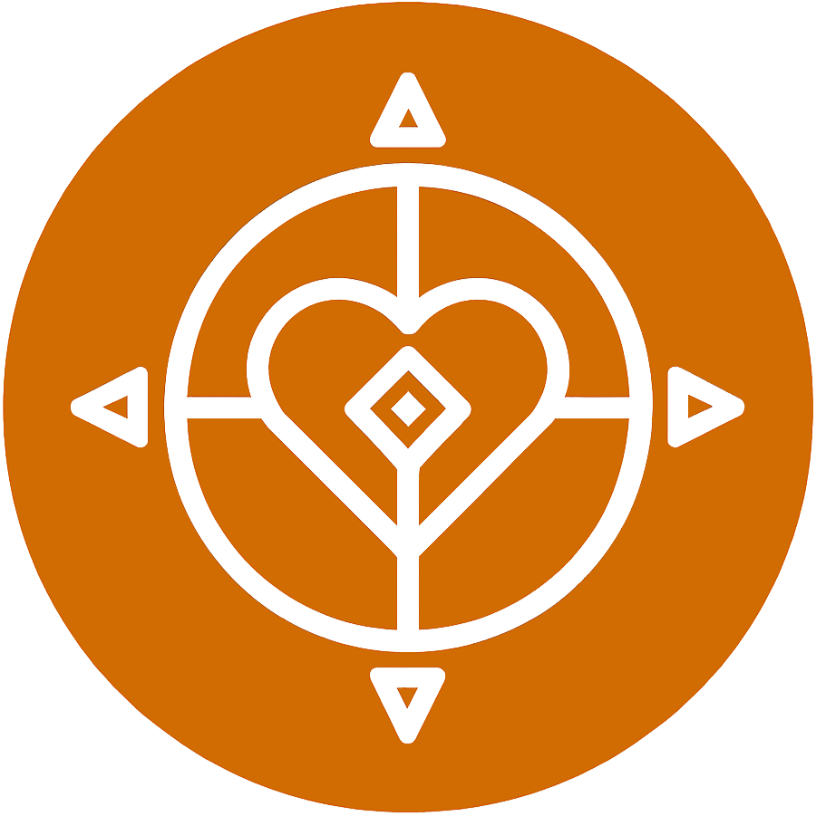

Operations
Diagnose the constraint holding you back, then build the processes and operating rhythms that scale with you instead of against you.
Built by founders, for founders
You build the mission. We build the operations, finance, people systems, and governance behind it — so your company can start, grow, or pivot without breaking.
Trusted by founders from Y Combinator, StartX, and Alchemist

"We had product market fit and had reached breakeven, but our operations were not yet structured for further growth. We engaged Vince and Na'ama to implement a new operations engine while maintaining our ongoing growth. The Waya AI-powered operating system now supports that engine, enabling us to streamline processes, focus on growing sales efficiently, reclaim time, and improve overall productivity."
The Founder Operating System
Founders build mission and product; we build the machinery underneath. Waya gives founders the tools and roadmap to reach your mission goals, unlock operational bottlenecks, and scale the organization — while staying true to what the company was built for.

Diagnose the constraint holding you back, then build the processes and operating rhythms that scale with you instead of against you.

Investor-ready narrative, financial model, and data room — calibrated to your stage, built by operators who have raised $130M+ themselves.
In the age of AI, your team needs to know the company cares — about their health, their families, and their growth. We build the people systems that prove it.

Governance and culture designed for a mission-driven company — built on conscious business principles, so growth can't corrupt the purpose.
Delivered three ways
We are founders with deep hands-on operations experience. Our methodology was crafted over tens of thousands of hours building and scaling our tech-enabled logistics business to a $150M scale, then pivoting and rebuilding after losing 80% of our revenues during Covid.
You can't control the market or the competition, but many founders fail by ignoring their organization. Waya provides the toolkit every founder needs to build a scalable, healthy and happy company.
Schedule a CallYour Path
Starting and growing — these are stages of the journey, not products. The same operating system meets you at each one; only the components change. This is the map we guide founders through.
Starting
Pre-product-market fit, the constraint is almost always PMF itself. Build only the scaffolding that keeps you honest and fundable.
Growing
Post-PMF, real processes exist and are worth improving. This is where process debt compounds — or gets paid down.
Each component on this map is a WayaFrame — an AI-enabled framework built by an operator who has lived it. Together they form your company's operating system, installed stage by stage.
What Founders Say
"Na'ama and Vince know exactly what investors look for because they've sat on both sides of the table. I brought them in to run point on the data room so I could stay focused on building and closing. They moved fast, asked the right questions, and produced work I didn't have to touch twice."

"Working with Na'ama was invaluable. She cut through the noise, helping me clarify my founder story and align our narrative, especially in a complex AI landscape. Her feedback sharpened both my 'why' and our direction — leading to a stronger pitch and a successful meeting."

"We engaged Vince and Na'ama to implement a new operations engine while maintaining our ongoing growth. The Waya AI-powered operating system now supports that engine — streamlining processes, focusing sales, reclaiming time, and improving overall productivity."
"The path forward isn't always clear, but you don't have to navigate it alone. Let us be your guide."Schedule a Call
Frequently Asked Questions
Waya provides services, workshops, and AI-enabled products for mission-driven companies that are starting, growing, or pivoting. You stay focused on mission and product; we streamline operations, finance, and governance — from data room preparation and financial modeling to operations audits and the Scale Up Program.
We're not management consultants who hand over a strategy deck and disappear. We're founders and operators who design, plan, and execute alongside you.
It starts with an intensive workshop that creates strategic focus and execution clarity. Then we embed with your team for 3–6 months, acting as fractional executives to bring the strategy to life through daily operating rhythms, SOPs, and culture work — connecting you with experts from our network for specific business or industry needs. Finally, we install our AI-enabled operating system, custom-built WayaFrames, to supercharge execution and decision-making at every level.
WayaFrames are AI-enabled frameworks that live inside your Claude Teams or Claude Cowork environment. Each one was designed by an industry and operations expert, encoding decades of hard-won knowledge into a structured, guided flow that integrates with your company's documents, data, and business applications. They work together as an operating system — the more you use them, the better they get at helping your business run as a single, coherent system.
We work with companies from the early stage through growth. Our Scale Up Program is a better fit for companies that have product-market fit and are at an important inflection point such as scaling or pivoting. Our Data Room, Financial Model, and Fundraising Narrative sessions are tailored to companies of all stages, from Seed through Series B+.
It depends on your stage. At Seed / pre-Series A, it's about the story and the problem you're solving — a compelling narrative with everything legally in place. At Series A, investors validate product-market fit: full financial history, unit economics, customer concentration, and corporate governance. At Series B, the question is how quickly you become the market leader: market dynamics, cohort economics, audited financials, compliance, and full IP and contract portfolios.
That's exactly when you should book a Data Room Preparation session. Starting a few months before a raise is dramatically better than scrambling from scratch when an investor sends a DD request list while you're still pitching.
No, our system works for companies in any region.
Waya works with technology companies as well as physical-world companies. You can be the founder of a tech startup, a non-profit organization, or a physical-world business. We are particularly effective for organizations with a high level of complexity, like supply chain, healthcare, and logistics.
When you've hit the ceiling of what you can solve alone. When you're the bottleneck and you know it. When you need a founder who's been in the trenches to help you navigate a critical transition — a scale-up, a pivot, the chaos in between. And when your VCs are pushing you to hire an expensive COO, but you're not there yet.
Book a call. We'll walk through where your company is on the path, what's holding it back, and which component to put in place next — so you can get back to the mission.